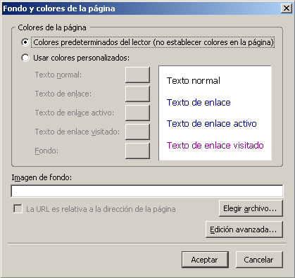
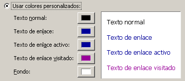
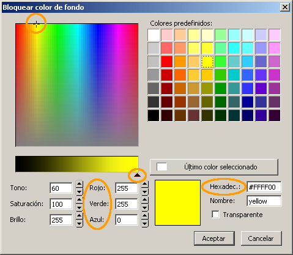

La base>>Colores y fondos de página

Hasta el momento las páginas que hemos creado editando directamente el código eran de color blanco. Sin embargo, es extraño encontrar páginas WEB que se asemejen a una hoja de papel; lo habitual es que se incluyan colores que hagan más agradable su presentación. Pero, antes de lanzarte a una desenfrenada pasión carnavalesca por el color no estaría de más que reflexionaras sobre la siguiente aportación de estilo.
La forma más elemental de modificar el aspecto de una página es variando el color del fondo. Hay unas cuantas explicaciones sobre la forma de representar el color en una pantalla de ordenador, pero antes de verlas vamos a hacer una práctica sencilla para cambiar el color del fondo de nuestra página.
Hay un procedimiento algo que nos ofrece alguna posibilidad más para ayudarnos a elegir correctamente los colores para nuestra página, pero, tras haber visto el procedimiento más sencillo vamos a detenernos para entender cómo se definen los colores en una página WEB.
Para que el navegador sepa cuáles son los colores que tiene que presentar se utiliza la denominada combinación RVA (Rojo-Verde-Azul) que en muchos sitios verás en sus siglas en inglés (RGB por Red-Green-Blue).
Este tipo de definición del color se basa en la combinación de 256 posibles cantidades de cada uno de los colores. Es como si tuviéramos un cuentagotas con capacidad para ir depositando sobre cada punto de la pantalla desde 0 a 255 gotas de cada uno de los colores básicos. Con esta forma de trabajar tendríamos desde el negro absoluto que correspondería a la ausencia total de color, hasta el blanco absoluto que sería la mezcla de las 255 gotas de cada uno de los colores. Entre ambos extremos quedan las posibles combinaciones de "gotas" de colores: 256 x 256 x 256 que hacen un total de 161777.216 colores diferentes.
Para representar esta gama de combinaciones se utilizan tres pares de números que indican respectivamente la cantidad de rojo, verde y azul que componen cada color. Por cierto, seguro que te estás preguntando cómo se hace para expresar una cantidad mayor de 99 "gotas" con un solo par de números. El misterio está en que no se utiliza la base 10, sino la notación hexadecimal o base 16, donde la A equivale al 10 decimal, la B al 11 y así sucesivamente hasta la F que equivale al 15. Además, para pasar de un orden de unidades al siguiente hay que juntar 16 unidades de cada orden en vez de 10 que es a lo que estamos habituados. Por ejemplo, la notación 12 en hexadecimal equivaldría a nuestro 18 ya que es una "decena hexadecimal", o sea 16 unidades, y dos unidades sueltas. Veamos algunos ejemplos:
|
Valores |
Color resultante |
Valores |
Color resultante |
Valores |
Color resultante |
|||||
|---|---|---|---|---|---|---|---|---|---|---|
|
FF0000 |
00FF00 |
0000FF |
||||||||
|
FFFF00 |
FF00FF |
00FFFF |
||||||||
|
25A7BB |
ACB312 |
6047B6 |
El otro procedimiento para modificar
el color de fondo de la página lo encontramos a
través del menú  .
.
 En el panel que aparece se muestra la combinación básica que se aplica por defecto a las nuevas páginas: fondo blanco, texto en negro y color para los enlaces en diferentes situaciones (enlace simple, activo o visitado) pero sin darnos la posibilidad de modificar ninguno de ellos.
Si optamos por marcar el botón de verificación para se activan los botones que acompañan a cada uno de los elementos.

Comprobamos que en la zona derecha del panel se presenta un recuadro que sirve de testigo visual para mostrarnos el efecto visual que produce la combinación de colores que se está aplicando.
Cuando pulsamos sobre algunos de los botones se lanza la paleta de selección de color para ese elemento a la que la dedicamos ahora algo más de atención.
Además de los colores predefinidos que hemos utilizado previamente podemos elegir cualquiera de los 16,8 millones de colores arrastrando la cruceta que se muestra en el cuadro principal para modificar el tono y la saturación. El brillo del color se modifica arrastrando cursor hacia la izquierda o derecha de la barra que aparece bajo el cuadro de tono y saturación.
A medida que modificamos la posición de estos dos indicadores veremos como se van produciendo variaciones en los indicadores numéricos de la zona inferior, tanto en la combinación de RVA como en la traducción de esa combinación a valores hexadecimales.
El lenguaje HTML también utiliza nombres, en inglés, para identificar algunos colores. Cuando el valor seleccionado coincide con alguno de los colores que tienen un nombre asignado dicho nombre aparece en la caja correspondiente, permaneciendo esta vacía si la combinación no se corresponde con ningún color con nombre. En el ejemplo que se muestra en la imagen aparece el nombre yellow (amarillo) que identifica a la combinación hexadecimal ffff00.
Una vez localizado el color que deseamos basta con pulsar el botón Aceptar para que se aplique ese valor al elemento desde el que habíamos lanzado el panel de selección de colores y volvamos al panel anterior para poder dar por finalizado el proceso o elegir el color de otro elemento.
Es importante en este momento comprobar que las combinaciones entre los colores del fondo y de los diferentes tipos de texto y enlaces es armoniosa y facilita la legibilidad.
 Ya
conocías la
forma rápida de acceder a la modificación del
color de fondo de la página desde la barra de herramientas.
También podemos desde ella modificar el color del texto que
tengamos seleccionado, o del que se escriba a partir de ese momento.
Como ya es habitual en la mayoría de los programas el
recuadro que figura más "abajo" (en nuestro ejemplo el
blanco) representa el color de fondo, mientras que el que se encuentra
más "arriba" indica el color del primer plano. Pulsando pues
sobre el cuadro de "primer plano" se abriría el panel de
selección de color que acabamos de comentar.
Ya
conocías la
forma rápida de acceder a la modificación del
color de fondo de la página desde la barra de herramientas.
También podemos desde ella modificar el color del texto que
tengamos seleccionado, o del que se escriba a partir de ese momento.
Como ya es habitual en la mayoría de los programas el
recuadro que figura más "abajo" (en nuestro ejemplo el
blanco) representa el color de fondo, mientras que el que se encuentra
más "arriba" indica el color del primer plano. Pulsando pues
sobre el cuadro de "primer plano" se abriría el panel de
selección de color que acabamos de comentar.
 para comprobar cómo se han
recogido las modificaciones en el código de la
página.
para comprobar cómo se han
recogido las modificaciones en el código de la
página. para
mostrar los resultados en el navegador comprobaremos que, como
aún no hemos salvado la página, el programa nos
pide que le demos un título para la página
así como un nombre y una ubicación al archivo.
Utiliza el título que te parezca más adecuado y
nombra el archivo como actividad17.html
para
mostrar los resultados en el navegador comprobaremos que, como
aún no hemos salvado la página, el programa nos
pide que le demos un título para la página
así como un nombre y una ubicación al archivo.
Utiliza el título que te parezca más adecuado y
nombra el archivo como actividad17.html El color del
fondo de página es un atributo de la etiqueta
El color del
fondo de página es un atributo de la etiqueta <body>
Si vemos el código de una página que tenga el
fondo de color verde puro sería así:
<body
bgcolor="#00ff00"> (El
símbolo
# es el equivalente anglosajón de nuestra abreviatura
nº)
El código que crea N|VU recoge de forma
diferente las combinaciones de color dependiendo de que se haya
activado o no la utilización de estilos en el
menú herramientas preferencias
preferencias
Si se trabaja sin estilos el código que se genera
será del siguiente tipo:
<body
text="#000000"
bgcolor="#6666cc" link="#000099" vlink="#990099"
alink="#000099">
Sin embargo, si se activa la utilización de estilos,
quedaría:
<body
style="color:
rgb(0,0,0); background-color: rgb(102,102,204);" link="#000099"
vlink="#ff0099" alink="#000099">
Lo importante es que, cuando se activan los estilos, el color del texto
y el del fondo se reflejan con notación decimal en lugar de
hexadecimal
código
fuente html o,
más cómodamente, la pestaña
para
localizar el código del color de fondo.Ahora que ya sabes cómo hacer que tu página muestre diferentes colores de fondo es el momento de que pongas en juego tu sentido estético.
¿Te parece agradable que cada una de las páginas de un sitio WEB tenga un color diferente o, por el contrario, te provoca cierto sobresalto?
¿Podría ser útil un cambio de color para identificar secciones dentro de un sitio WEB? ¿De hacerlo, utilizarías un cambio brusco o lo harías dentro de una gama tonal para todo el sitio?
 Seguro que
con esas dos preguntas puedes empezar tus reflexiones, pero te apunto
otra cuestión que deberías tener en cuenta: hay
combinaciones estéticas y muy legibles que pueden ser
inadecuadas si pretendemos que la información de la
página se destine a imprimir. ¿Que
ocurriría si alguien pretende imprimir una página
que tiene el texto en blanco sobre un fondo de tono azul oscuro?
Seguro que
con esas dos preguntas puedes empezar tus reflexiones, pero te apunto
otra cuestión que deberías tener en cuenta: hay
combinaciones estéticas y muy legibles que pueden ser
inadecuadas si pretendemos que la información de la
página se destine a imprimir. ¿Que
ocurriría si alguien pretende imprimir una página
que tiene el texto en blanco sobre un fondo de tono azul oscuro?
Cada vez es más habitual que se utilicen recursos para que los enlaces no aparezcan subrayados. Sin embargo, la opción que utilizan los navegadores como alternativa predeterminada es mostrar el enlace en color azul y subrayado, lo cual ha creado un aprendizaje condicionado en el que hemos asociado esas características visuales a la función de enlace.
Por cierto, a pesar de que ya has visto que los enlaces entre las páginas de este curso no aparecen subrayados ¿no has intentado pinchar en la palabra enlace para ver a dónde te llevaba? Está claro que no deberíamos, bajo ningún concepto, utilizar el color azul y el subrayado para resaltar algún término, ya que inducimos a error al visitante al alterar el esquema perceptivo propio de la WEB.